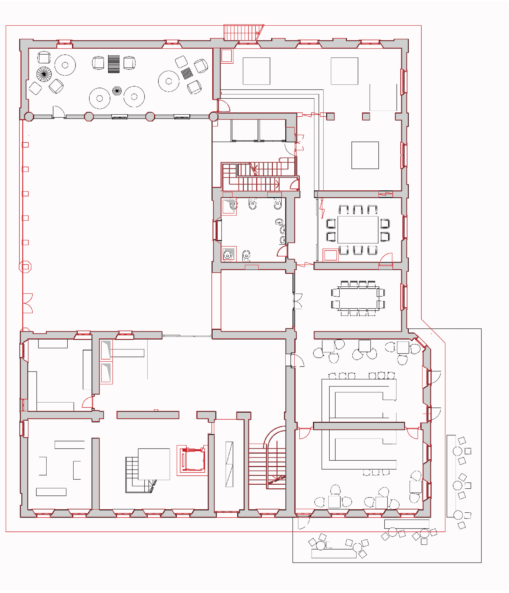

SOLUTION
DimensioneZero is a spatial metaphor based on geometric principles which led to the renovation of the three buildings in the Monza Park. Each building provides different services to strenghten sociality at different levels.

BRIEF
Develop a concept for three unused buildings to create a cohesive system within the Monza Park.
DESIGN METHODS
context mapping, user research, trend research, concept design
SOLUTION
DimensioneZero is a spatial metaphor based on geometric principles which led to the renovation of the three buildings in the Monza Park. Each building provides different services to strenghten sociality at different levels.
PERSONAL CONTRIBUTION
I researched current trends and used these to develop the overall concept for the intervention. I then translated this into specific spatial solutions.
CONCEPT
In the unstable post-pandemic social context, people find themselves increasingly alone. The Monza Park system was therefore designed to help people regain their social and collective dimension. Visitors are guided through three buildings, each representing a geometric dimension (length, surface area and volume), inspired by their architecture. Each building then offers services and activities that bring people together in a variety of ways.
THE VOLUME
In particular, the concept was fully realised in the third building, which embodies the third geometric dimension: volume. While preserving as much of the original architecture as possible, the new interiors play with full and empty spatial elements, accentuated by solid colours. The building houses a library and a bookshop, as well as areas for studying and relaxing, and a coffee bar.

more details here
->
Project book
-> Presentation board